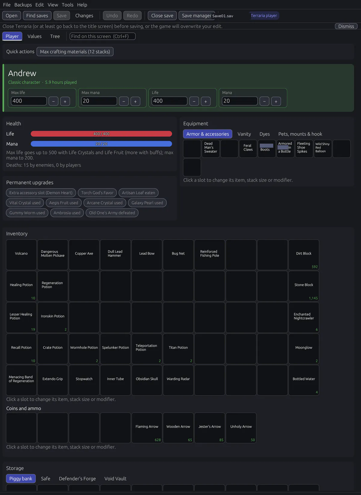

Terraria character 存档编辑器
使用 Universal Save Editor 在你自己的电脑上编辑 Terraria character 的存档。这是一款免费的离线存档编辑器和管理器，支持 590+（593）款游戏。备份、还原和开始新周目都可以在同一个窗口里完成。不上传任何内容，没有限制。
版本 0.9.3： Windows (64-bit) · Windows on ARM · Linux (64-bit) · Linux on ARM · macOS
所有版本和发行说明
可以编辑的内容
- Life and mana
- Permanent upgrades
- Inventory, coins and ammo, equipment (armor, vanity, dyes, pets) and storage (piggy bank, safe, forge, void vault) as item grids
- A Max crafting materials button (1.4.4 and later) that fills the ores, bars, gems, woods, monster drops and other materials you already have to 9999, leaving critters, fish and boss summons alone
编辑器以英文显示这些数值名称。

Terraria character 的存档位置
文件夹： Documents\My Games\Terraria\Players
文件： <character>.plr
不用自己去找：在编辑器中选择查找我的游戏存档，再选 Terraria character，它会列出找到的存档。（浏览器版无法浏览你的文件夹，请自己从这个文件夹中打开文件。）
如何编辑你的 Terraria character 存档
- 为 Windows、macOS 或 Linux 下载 Universal Save Editor，直接运行即可。不想安装任何东西？可以改为在浏览器中使用：它同样在你的电脑上运行，保存时会下载编辑后的文件（Chrome 和 Edge 可以保存回同一个文件）。
- 关闭游戏，以免它覆盖你的修改。
- 选择查找我的游戏存档，选中 Terraria character 并打开你的存档（也可以把存档文件拖到窗口上）。
- 修改你想改的内容，然后选择保存。编辑器会检查新文件，并先备份旧文件。
关于 Terraria character 存档的常见问题
Terraria character 的存档文件在哪里？
通常位于 Documents\My Games\Terraria\Players，文件名为 <character>.plr。下载版编辑器可以帮你找到：选择查找我的游戏存档，再选 Terraria character。
Terraria character 还能加载编辑过的存档吗？
编辑器会按游戏使用的相同格式写回存档，并在替换之前把新文件读回来检查。原文件会先被备份，所以如果游戏中出现异常，可以在备份中还原。
能在 Steam Deck 或 Linux 上编辑 Terraria character 的存档吗？
可以。有 Linux 版，而且查找我的游戏存档还会查找 Steam Play 存放 Windows 游戏存档的 Proton 和 Wine 前缀目录。
能在浏览器中编辑我的 Terraria character 存档吗？
可以。浏览器版在你自己的电脑上运行，绝不会上传存档。请自己打开文件并保留一份副本，因为保存时下载的是编辑后的文件，而不是备份旧文件。在 Chrome 和 Edge 中，它还可以保存回同一个文件，并先在浏览器中保留原文件。
用于在线游戏安全吗？
编辑过的存档仅限单人游戏使用。请勿在在线或多人模式中使用，否则可能违反规则或导致账号被标记。
需要付费吗？
不需要。它免费，而且永远免费：没有广告，无需账号，没有限制。代码以 GPL-3.0 开源。
在你的游戏里管用了吗？
在 Terraria character 中试过修改了吗？告诉我们是否成功。只需一分钟，不会发送任何存档。
为什么使用它
- 永久免费。不收费，没有广告，无需账号，也没有付费版本。
- 离线。你的存档不会离开你的电脑：不上传任何内容，因此没有文件大小限制、排队或频率限制。
- 安全。每个存档在写入前都会读回检查，旧文件会先备份（备份 › 打开存档管理器）。
- 不认识的游戏也能用。数值搜索可以找到你知道的数字，或你不知道的数字（血条、隐藏计数器）：扫描、游玩、保存，然后保留增加、减少、改变或未变的项。
- Linux 和 Steam Deck。查找我的游戏存档还会在 Proton 和 Wine 前缀目录中查找，通过 Steam Play 运行的 Windows 游戏会把存档放在那里。
- 支持你的语言。菜单和提示信息提供英语、德语、西班牙语、法语、意大利语、波兰语、土耳其语、俄语、巴西葡萄牙语、日语、韩语、简体中文和繁体中文，并跟随系统语言。
- 存档管理器（工具栏按钮）。自动备份和命名备份保存在每个存档旁边的文件夹中，游戏不会加载它们。可以还原任意备份（当前存档会先被备份）、比较备份，或者在只有一个存档位的游戏中先备份再开始新游戏，之后再还原旧存档。每个备份在替换任何内容之前都会写入磁盘并经过检查。
- 开源。任何人都可以阅读代码（GPL-3.0）。
编辑过的存档仅限单人游戏使用。请勿在在线或多人模式中使用。